Course contents and schedule
Recap
- We learned about compaction in granular and cohesive soils.
- We learned about proctor test and the effect of compactive effort.
- We learned about the effect of water content on the fabric of soils in compaction.
- We learned about compaction specifications.
- We learned about compaction equiptment and field control.
- Today we will learn about some effects of water and the principle of effective stresses.
Homework assignment 3
- Due on 02/21/2022.
- 50 points total.
- Start ASAP.
Contents
- Suction and capillary action.
- Swelling/shrinkage in soils.
- Frost action in soils (self study).
- Total stress, pore pressure, and effective stress.
More in chapter 5 of Holtz et al. (2013)
Water in hydrostatic conditions

Capillary rise
- Arises from surface tension.
- For soils, it occurs between water and particles.
Capillary rise: $$h_c=\cfrac{-4T}{\gamma_w d}$$
- \(T=\) surface tension
- \(d=\) tube diameter

Suction pressure
Negative pore water pressure: $$u_c=\cfrac{-2T}{r_m}$$ \(r_m=\) radius of water meniscus
- In coarse soils suction is limited. Cavitation or "boiling" occurs if \(u_c< p_{atm}\).
- In fine soils, cavitaion is prevented. Thus \(h_c>10\)m.
Capillary rise

- Particles are connectedby menisci.
- Interparicle effective stress increases.
- In soils is common to assume the effective size of pores is 20% of effective grain size \(D_{10}\).
Shrinkage in soils
- Pores initially saturated and menisci radii not fully developed.
- As evaporation progresses tube length devreases and the radii decreases.
- Eventually, menisci tension and walls rigidity reach equilibrium.
- If the tube is immersed in water, the menisci is destroyed and the tube can expand.

Shrinkage in soils
Can be computed using any of: $$SL=\left(\frac{V_{dry}}{M_s}-\frac{1}{\rho_s}\right)\rho_w \times 100$$ $$SL=\left(\frac{V_{dry} \gamma_w}{W_s}-\frac{1}{G_s}\right) \times 100$$ $$SL=w_i-\left(\cfrac{(V_i-V_{dry})\gamma_w}{W_s}\right) \times 100$$
- \(V_i=\) initial volume
- \(w_i=\) initial water content
- \(V_{dry}\) dried volume
Example 4.1
During the determination of the shrinkage limit of a sandy clay, the following laboratory data was obtained:
- Wet wt. of soil + dish= 87.85 g
- Dry wt. + dish= 76.91 g
- Wt. dish = 52.7 g
Volumetric determination of soil pat:
- Wt. of dish + mercury= 430.8 g
- Wt. of dish = 244.62 g
calculate the \(SL\) assuming \(G_s=2.65\).